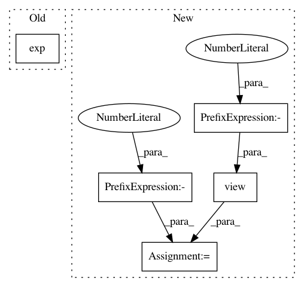

d08f673481a2cfaa0ce702e80cc22cdd25e600e5,torch_geometric/nn/models/schnet.py,GaussianSmearing,forward,#GaussianSmearing#Any#,105
Before Change
def forward(self, distances):
coeff = -0.5 / torch.pow(self.widths, 2)
gauss = torch.exp(coeff * torch.pow(distances - self.offsets, 2))
return gauss
class ShiftedSoftplus(nn.Module):
After Change
self.register_buffer("offset", offset)
def forward(self, dist):
dist = dist.view(-1, 1) - self.offset.view(1, -1)
return torch.exp(self.coeff * torch.pow(dist, 2))
class ShiftedSoftplus(torch.nn.Module):
In pattern: SUPERPATTERN
Frequency: 3
Non-data size: 5
Instances
Project Name: rusty1s/pytorch_geometric
Commit Name: d08f673481a2cfaa0ce702e80cc22cdd25e600e5
Time: 2020-05-31
Author: matthias.fey@tu-dortmund.de
File Name: torch_geometric/nn/models/schnet.py
Class Name: GaussianSmearing
Method Name: forward
Project Name: jsalt18-sentence-repl/jiant
Commit Name: ba46fb02c5b2fae67489dc44fb399c2c121ecf66
Time: 2018-06-23
Author: wang.alex.c@gmail.com
File Name: src/models.py
Class Name: MultiTaskModel
Method Name: _seq_gen_forward
Project Name: rusty1s/pytorch_geometric
Commit Name: 6ad34e5887f847aeb9f681e8f290d5877b76e52b
Time: 2020-05-13
Author: matthias.fey@tu-dortmund.de
File Name: torch_geometric/nn/models/schnet.py
Class Name: GaussianSmearing
Method Name: forward